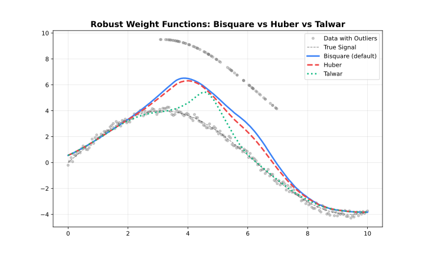

Robustness
Outlier handling through iterative reweighting.
How Robustness Works
Standard LOWESS can be biased by outliers. Robustness iterations downweight points with large residuals:
- Fit initial LOWESS
- Compute residuals
- Assign robustness weights (large residuals → low weight)
- Refit using combined distance × robustness weights
- Repeat steps 2–4


Robustness Methods
Bisquare (Default)
Smooth downweighting. Points transition gradually from full weight to zero.
\[w(u) = \begin{cases} (1 - u^2)^2 & |u| < 1 \\ 0 & |u| \geq 1 \end{cases}\]
Use when: General purpose, balanced approach.
using FastLOWESS
using Random, Statistics
rng = MersenneTwister(42)
x = collect(range(0, 2π, length=100))
y = sin.(x) .+ randn(rng, 100) .* 0.3
model = Lowess(; iterations=3, robustness_method="bisquare")
result = fit(model, x, y)
println("First smoothed value (bisquare robustness): ", result.y[1])First smoothed value (bisquare robustness): 0.4153235846410312Huber
Linear penalty beyond threshold. Less aggressive than Bisquare.
\[w(u) = \begin{cases} 1 & |u| \leq k \\ k/|u| & |u| > k \end{cases}\]
Use when: Moderate outliers, want to retain some influence.
using FastLOWESS
using Random, Statistics
rng = MersenneTwister(42)
x = collect(range(0, 2π, length=100))
y = sin.(x) .+ randn(rng, 100) .* 0.3
model = Lowess(; iterations=3, robustness_method="huber")
result = fit(model, x, y)
println("First smoothed value (huber robustness): ", result.y[1])First smoothed value (huber robustness): 0.43736147750646337Talwar
Hard threshold. Points are either fully weighted or completely excluded.
\[w(u) = \begin{cases} 1 & |u| \leq k \\ 0 & |u| > k \end{cases}\]
Use when: Extreme outliers, want binary exclusion.
using FastLOWESS
using Random, Statistics
rng = MersenneTwister(42)
x = collect(range(0, 2π, length=100))
y = sin.(x) .+ randn(rng, 100) .* 0.3
model = Lowess(; iterations=3, robustness_method="talwar")
result = fit(model, x, y)
println("First smoothed value (talwar robustness): ", result.y[1])First smoothed value (talwar robustness): 0.3695930967351355Comparison
| Method | Transition | Aggressiveness | Use Case |
|---|---|---|---|
| Bisquare | Smooth | Moderate | General purpose |
| Huber | Gradual | Mild | Preserve influence |
| Talwar | Hard | Strong | Extreme contamination |
Detecting Outliers
Use robustness weights to identify potential outliers:
using FastLOWESS
using Random, Statistics
rng = MersenneTwister(42)
x = collect(range(0, 2π, length=100))
y = sin.(x) .+ randn(rng, 100) .* 0.3
model = Lowess(; iterations=5, return_robustness_weights=true)
result = fit(model, x, y)
for (i, w) in enumerate(result.robustness_weights)
if w < 0.5
println("Potential outlier at index $i: weight = $w")
end
endPotential outlier at index 2: weight = 0.38693931906870316
Potential outlier at index 21: weight = 0.0
Potential outlier at index 22: weight = 0.010439659941864604
Potential outlier at index 23: weight = 0.0
Potential outlier at index 24: weight = 0.0
Potential outlier at index 25: weight = 0.0
Potential outlier at index 26: weight = 0.023395022374177052
Potential outlier at index 29: weight = 0.0
Potential outlier at index 31: weight = 0.13220583405533723
Potential outlier at index 32: weight = 0.21690169011944369
Potential outlier at index 33: weight = 0.43051692707799316
Potential outlier at index 34: weight = 0.0
Potential outlier at index 35: weight = 0.04440572865514955
Potential outlier at index 36: weight = 0.386186917247005
Potential outlier at index 38: weight = 0.12311455474532798
Potential outlier at index 40: weight = 0.3625322763204385
Potential outlier at index 41: weight = 0.0
Potential outlier at index 44: weight = 0.2878628262866162
Potential outlier at index 46: weight = 0.27913836947213516
Potential outlier at index 49: weight = 0.44659812265841126
Potential outlier at index 51: weight = 0.22789354180822236
Potential outlier at index 52: weight = 0.47344323007716277
Potential outlier at index 53: weight = 0.0
Potential outlier at index 57: weight = 0.49453323661552084
Potential outlier at index 60: weight = 0.0
Potential outlier at index 62: weight = 0.225582030463708
Potential outlier at index 66: weight = 0.0
Potential outlier at index 67: weight = 0.4750958799451656
Potential outlier at index 68: weight = 0.0
Potential outlier at index 69: weight = 0.0
Potential outlier at index 70: weight = 0.0
Potential outlier at index 73: weight = 0.17066170634194724
Potential outlier at index 75: weight = 0.45286596315242933
Potential outlier at index 76: weight = 0.4209287021041021
Potential outlier at index 78: weight = 0.24781172548335417
Potential outlier at index 79: weight = 0.0014078681811974766
Potential outlier at index 80: weight = 0.0
Potential outlier at index 82: weight = 0.0
Potential outlier at index 83: weight = 0.06357816581068063
Potential outlier at index 84: weight = 0.019141546279460367
Potential outlier at index 88: weight = 0.015488787762502043
Potential outlier at index 90: weight = 0.0
Potential outlier at index 91: weight = 0.3646059826846296
Potential outlier at index 97: weight = 0.0
Potential outlier at index 99: weight = 0.11471026741941674Scale Estimation
Residuals are scaled before computing robustness weights. Two methods:
| Method | Formula | Robustness |
|---|---|---|
| MAD | median(|r − median(r)|) | Very robust (default) |
| MAR | median(|r|) | Robust, uncentered |
| Mean | mean(|r|) | Less robust, fastest |

using FastLOWESS
using Random, Statistics
rng = MersenneTwister(42)
x = collect(range(0, 2π, length=100))
y = sin.(x) .+ randn(rng, 100) .* 0.3
model = Lowess(; iterations=3, scaling_method="mad")
result = fit(model, x, y)
println("First smoothed value (MAD scaling): ", result.y[1])First smoothed value (MAD scaling): 0.4153235846410312Auto-Convergence
Stop iterations early when weights stabilize:
Auto-convergence can significantly reduce computation when weights stabilize before reaching max iterations.
using FastLOWESS
using Random, Statistics
rng = MersenneTwister(42)
x = collect(range(0, 2π, length=100))
y = sin.(x) .+ randn(rng, 100) .* 0.3
model = Lowess(; iterations=10, auto_converge=1e-6)
result = fit(model, x, y)
println("First smoothed value (auto_converge enabled): ", result.y[1])First smoothed value (auto_converge enabled): 0.40528007658848925